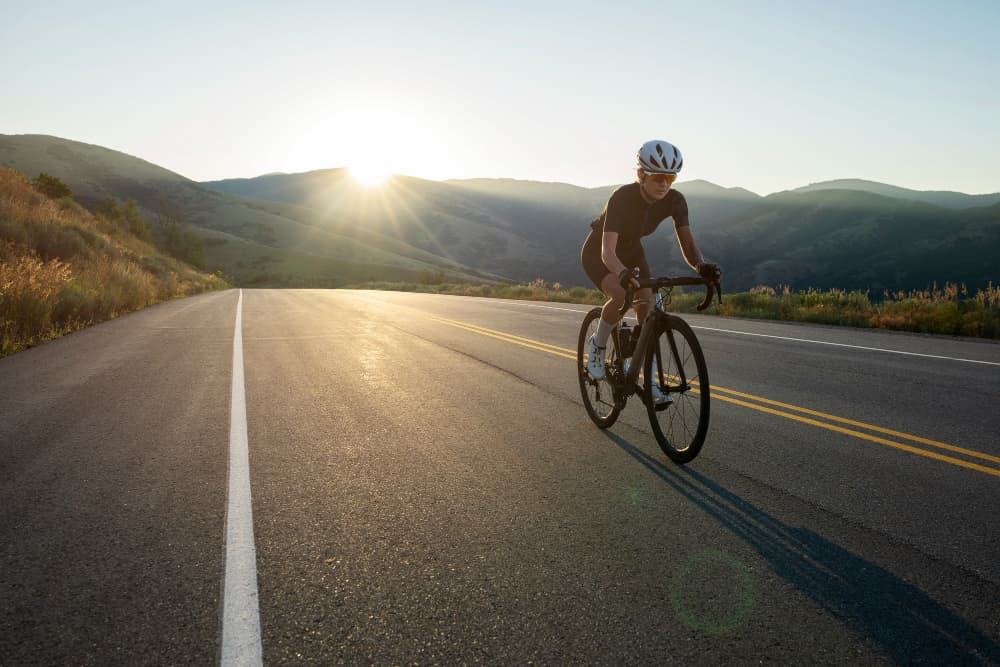

Ciclismo y Maternidad: Un Camino de Bienestar
Publicado el 26 de septiembre de 2023
La maternidad es una etapa significativa en la vida de una mujer, repleta de cambios físicos y emocionales. El ciclismo, una actividad versátil y de bajo impacto, puede aportar innumerables beneficios a las madres durante esta transición. En esta nota, exploraremos cómo el ciclismo puede contribuir al bienestar de las mamás, promoviendo una salud óptima y facilitando la adaptación a la maternidad.
Ejercicio de Bajo Impacto
El ciclismo es un ejercicio de bajo impacto que minimiza el estrés en las articulaciones y los músculos, brindando una opción segura y efectiva durante el embarazo.
Control de Peso
El ciclismo ayuda a mantener un aumento de peso saludable durante el embarazo, lo que puede reducir el riesgo de complicaciones relacionadas con el embarazo.
Fortalecimiento Muscular
Este deporte trabaja principalmente las piernas, glúteos y músculos del núcleo, fundamentales para la estabilidad y el apoyo durante el embarazo y el parto.
Conclusión
El ciclismo es una herramienta valiosa que puede contribuir al bienestar de las madres durante la maternidad y más allá. Desde el control del peso hasta la reducción del estrés y el apoyo social, esta actividad puede ser un apoyo vital en una de las etapas más emocionantes de la vida de una mujer. Como siempre, es importante consultar con un profesional de la salud antes de iniciar o continuar cualquier programa de ejercicio durante el embarazo para asegurarse de que sea seguro y adecuado para cada situación individual. ¡Pedalea hacia una maternidad saludable y feliz!